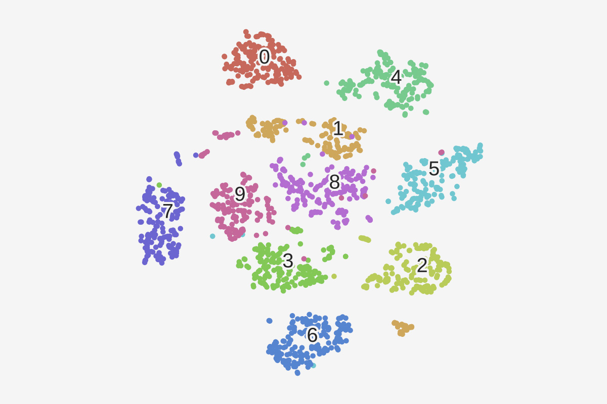
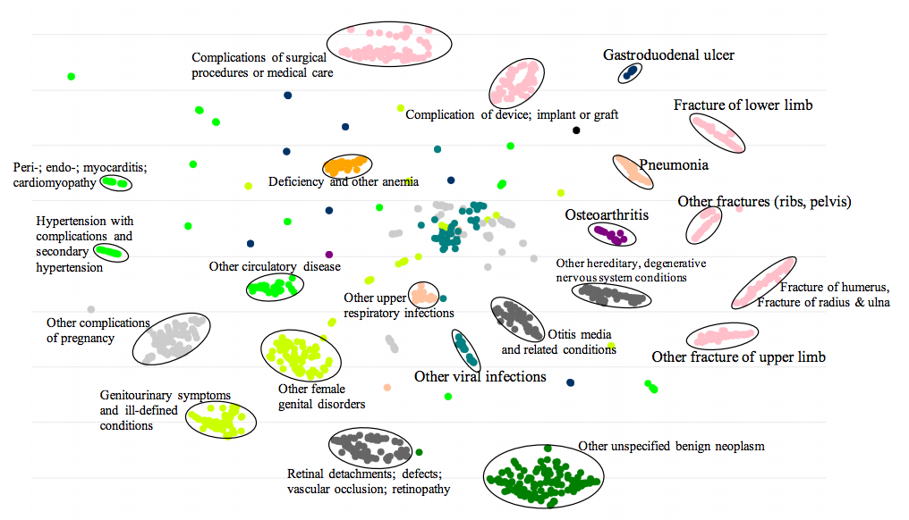
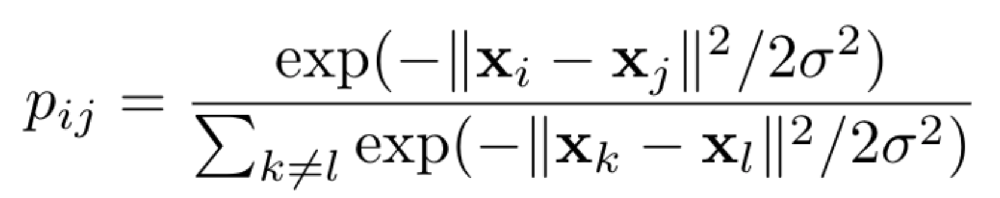
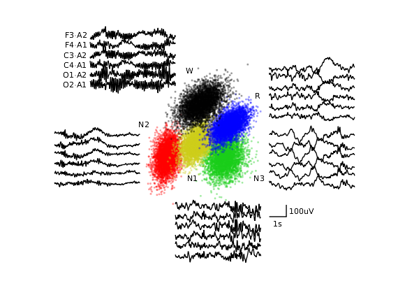
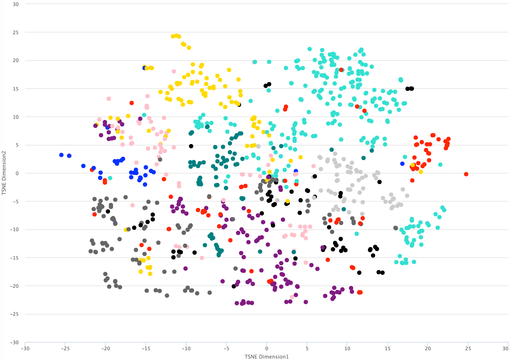
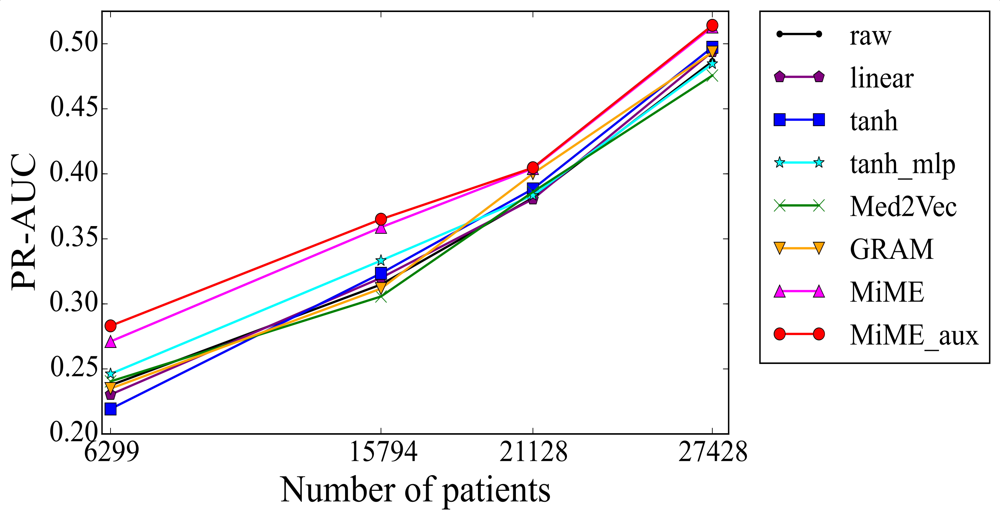

"In healthcare data, similar conditions should live in similar neighborhoods."
August 2026 · Giacomo Saccaggi
Electronic Health Records (EHRs) contain rich information about patients: diagnosis codes (ICD-9/10), procedure codes (CPT), medications (NDC), lab results, and clinical notes. But how do we feed this heterogeneous data into machine learning models?
The naive approach is one-hot encoding: create a binary vector where each position corresponds to a possible diagnosis code. If a patient has diabetes (ICD-9: 250.00), we set that position to 1.

One-hot encoding treats all medical codes as equally distant from each other
The problem? With ~15,000 ICD-9 codes and ~70,000 ICD-10 codes, we get extremely sparse, high-dimensional vectors where:
What we need is a way to represent medical concepts as dense, low-dimensional vectors where similar conditions cluster together. This is where embeddings come in.
The breakthrough came from NLP. In 2013, Mikolov et al. introduced Word2Vec, a neural network that learns vector representations of words from their context. The key insight: "You shall know a word by the company it keeps."
Given a target word, predict the surrounding context words. If we see "patient was diagnosed with diabetes and prescribed metformin", the model learns that "diabetes" often appears near "diagnosed", "prescribed", and "metformin".
Maximize the probability of context words given the target word:
J(θ) = Σ(t,c)∈D log p(c|t)
Where the probability is computed using softmax:
p(c|t) = exp(vcT · vt) / Σw∈V exp(vwT · vt)
vt = embedding of target word, vc = embedding of context word, V = vocabulary

Skip-gram: predict context words from the center word
The softmax denominator requires summing over the entire vocabulary for every training example. With 15,000+ medical codes, this is prohibitively expensive.
Instead of computing the full softmax, we reformulate the problem as binary classification: distinguish real (target, context) pairs from fake ones.
For each positive pair (t, c), sample k negative pairs (t, n) where n is a random word:
J(θ) = log σ(vcT · vt) + Σi=1k 𝔼n~P(w)[log σ(-vnT · vt)]
Where σ is the sigmoid function and P(w) is a noise distribution (typically unigram3/4)
This reduces complexity from O(|V|) to O(k) per example, where k is typically 5-20.
The same principle applies to healthcare. Instead of words in sentences, we have medical codes in patient records. A patient's visit becomes a "sentence" of diagnosis codes, procedures, and medications.

Medical codes can be embedded using the same Word2Vec principles
Given a corpus of patient records, we treat each visit as a context window:
# Patient visit: [Diabetes, Hypertension, Metformin, Lisinopril] # Generate skip-gram pairs: # (Diabetes, Hypertension), (Diabetes, Metformin), (Diabetes, Lisinopril) # (Hypertension, Diabetes), (Hypertension, Metformin), ... from gensim.models import Word2Vec # Each patient's visits as a list of medical codes patient_records = [ ["250.00", "401.9", "metformin", "lisinopril"], # Patient 1, Visit 1 ["250.00", "272.4", "atorvastatin"], # Patient 1, Visit 2 ["414.01", "401.9", "aspirin", "metoprolol"], # Patient 2, Visit 1 # ... millions more visits ] # Train Word2Vec on medical codes model = Word2Vec( sentences=patient_records, vector_size=128, # Embedding dimension window=5, # Context window size min_count=5, # Ignore rare codes sg=1, # Skip-gram (vs CBOW) negative=10, # Negative samples per positive workers=4 ) # Get embedding for diabetes diabetes_embedding = model.wv["250.00"] # Shape: (128,)
Once trained, embeddings capture semantic relationships. Similar diagnoses cluster together in the vector space:

Similar conditions cluster together in embedding space
# Find codes most similar to "Acute upper respiratory infection" model.wv.most_similar("465.9", topn=5) # Results: # [("466.0", 0.89), # Acute bronchitis # ("786.2", 0.85), # Cough # ("461.9", 0.83), # Acute sinusitis # ("462", 0.81), # Acute pharyngitis # ("460", 0.79)] # Common cold
Perhaps the most remarkable property: embeddings support analogical reasoning. Just as "King - Man + Woman ≈ Queen" in word embeddings, medical embeddings exhibit similar behavior:
Hypertension + Obesity ≈ ?
Results: Type 2 Diabetes, Hyperlipidemia, Coronary Atherosclerosis
The model learned that hypertension combined with obesity risk factors leads to metabolic syndrome conditions!
# Hypertension + Obesity → what conditions? result = model.wv.most_similar( positive=["401.9", "278.00"], # Hypertension + Obesity topn=5 ) # [("250.00", 0.82), # Type 2 Diabetes # ("272.4", 0.79), # Hyperlipidemia # ("414.01", 0.76), # Coronary atherosclerosis # ("427.31", 0.71), # Atrial fibrillation # ("585.9", 0.68)] # Chronic kidney disease
Now that we have embeddings for individual medical codes, how do we represent an entire patient?
The simplest approach: sum (or average) the embeddings of all codes in the patient's history:
vpatient = Σc ∈ codes(patient) vc
Or with averaging: vpatient = (1/|codes|) × Σc vc
import numpy as np def patient_embedding(patient_codes, model, aggregate='sum'): """Convert list of medical codes to patient vector.""" embeddings = [] for code in patient_codes: if code in model.wv: embeddings.append(model.wv[code]) if not embeddings: return np.zeros(model.vector_size) embeddings = np.array(embeddings) if aggregate == 'sum': return embeddings.sum(axis=0) elif aggregate == 'mean': return embeddings.mean(axis=0) # Patient with diabetes, hypertension, and CKD patient_codes = ["250.00", "401.9", "585.9"] patient_vec = patient_embedding(patient_codes, model) print(patient_vec.shape) # (128,)
This patient vector can now be used as input to any downstream model: mortality prediction, readmission risk, disease progression, etc.
How do we visualize 128-dimensional embeddings? t-SNE (t-distributed Stochastic Neighbor Embedding) projects high-dimensional data to 2D while preserving local structure.
t-SNE projects high-dimensional embeddings to 2D for visualization
Step 1: Compute pairwise similarities in high-dimensional space using Gaussian kernel:
pj|i = exp(-||xi - xj||² / 2σi²) / Σk≠i exp(-||xi - xk||² / 2σi²)
Step 2: Compute similarities in low-dimensional space using Student t-distribution (heavier tails):
qij = (1 + ||yi - yj||²)-1 / Σk≠l (1 + ||yk - yl||²)-1
Step 3: Minimize KL divergence between P and Q:
KL(P||Q) = Σi Σj pij log(pij / qij)
The Student t-distribution is crucial: its heavy tails allow dissimilar points to be pushed far apart in the low-dimensional space, preventing the "crowding problem" where everything collapses to the center.
from sklearn.manifold import TSNE import matplotlib.pyplot as plt # Get embeddings for all medical codes codes = list(model.wv.key_to_index.keys()) embeddings = np.array([model.wv[c] for c in codes]) # Apply t-SNE tsne = TSNE(n_components=2, perplexity=30, random_state=42) embeddings_2d = tsne.fit_transform(embeddings) # Visualize plt.figure(figsize=(12, 8)) plt.scatter(embeddings_2d[:, 0], embeddings_2d[:, 1], alpha=0.5, s=10) plt.title("Medical Code Embeddings (t-SNE)") plt.show()
Standard Word2Vec treats medical codes as independent tokens. But healthcare data has additional structure:
Med2Vec extends Word2Vec with a multi-layer architecture that captures both code-level and visit-level representations.

Med2Vec learns both code embeddings and visit embeddings
| Layer | Input | Output | Purpose |
|---|---|---|---|
| Code Embedding | One-hot code | Dense vector | Learn code representations |
| Visit Embedding | Sum of code embeddings | Visit vector | Aggregate codes in a visit |
| Softmax (codes) | Visit embedding | Code probabilities | Predict codes in current visit |
| Softmax (visits) | Visit embedding | Next visit codes | Predict codes in adjacent visits |
The key innovation: Med2Vec jointly optimizes for within-visit co-occurrence and between-visit sequences:
L = Lcode + Lvisit
Lcode: predict codes from visit embedding (within-visit structure)
Lvisit: predict next visit's codes from current visit embedding (sequential structure)
Real healthcare data is even more structured. A visit contains not just diagnoses, but also the treatments prescribed for each diagnosis. MiME captures this hierarchical structure.

MiME captures diagnosis-treatment relationships within visits
MiME adds auxiliary tasks during training to learn richer representations:
These auxiliary tasks force the model to learn semantically meaningful relationships, not just co-occurrence statistics.
Let's build a complete deep neural network for predicting in-hospital mortality using PyTorch. We'll work with MIMIC-III style EHR data.
Our dataset contains patient visits with diagnosis codes and a binary mortality label:
# Sample data structure # patient_id | visit_diagnoses | mortality # 1 | [250.00, 401.9, 585.9] | 0 # 2 | [414.01, 427.31, 428.0, 518.81] | 1 # 3 | [496, 786.05, 491.21] | 0
Each patient's diagnoses are encoded as a multi-hot vector (multiple 1s, unlike one-hot):
import numpy as np import torch from torch.utils.data import Dataset, DataLoader class EHRDataset(Dataset): """Dataset for EHR diagnosis codes.""" def __init__(self, diagnoses_list, labels, num_codes): """ Args: diagnoses_list: List of lists, each inner list contains code indices labels: Binary mortality labels num_codes: Total number of unique diagnosis codes """ self.diagnoses_list = diagnoses_list self.labels = labels self.num_codes = num_codes def __len__(self): return len(self.labels) def __getitem__(self, idx): # Create multi-hot vector multi_hot = np.zeros(self.num_codes, dtype=np.float32) for code_idx in self.diagnoses_list[idx]: multi_hot[code_idx] = 1.0 return ( torch.tensor(multi_hot), torch.tensor(self.labels[idx], dtype=torch.long) ) # Example usage num_codes = 1000 # Vocabulary size train_diagnoses = [[10, 50, 200], [5, 100, 300, 450], ...] train_labels = [0, 1, ...] dataset = EHRDataset(train_diagnoses, train_labels, num_codes) dataloader = DataLoader(dataset, batch_size=32, shuffle=True)
A feedforward neural network with fully connected layers, ReLU activations, and dropout for regularization:
import torch.nn as nn import torch.nn.functional as F class MortalityDNN(nn.Module): """Deep Neural Network for mortality prediction.""" def __init__(self, input_dim, hidden_dims=[512, 256, 128], dropout=0.3): """ Args: input_dim: Number of diagnosis codes (vocabulary size) hidden_dims: List of hidden layer dimensions dropout: Dropout probability """ super().__init__() layers = [] prev_dim = input_dim for hidden_dim in hidden_dims: layers.extend([ nn.Linear(prev_dim, hidden_dim), nn.ReLU(), nn.Dropout(dropout) ]) prev_dim = hidden_dim self.hidden_layers = nn.Sequential(*layers) self.output_layer = nn.Linear(prev_dim, 2) # Binary classification def forward(self, x): """ Args: x: Multi-hot encoded diagnoses [batch_size, num_codes] Returns: logits: [batch_size, 2] """ h = self.hidden_layers(x) logits = self.output_layer(h) return logits # Initialize model model = MortalityDNN( input_dim=1000, hidden_dims=[512, 256, 128], dropout=0.3 ) print(model)
# Model architecture output: # MortalityDNN( # (hidden_layers): Sequential( # (0): Linear(in_features=1000, out_features=512) # (1): ReLU() # (2): Dropout(p=0.3) # (3): Linear(in_features=512, out_features=256) # (4): ReLU() # (5): Dropout(p=0.3) # (6): Linear(in_features=256, out_features=128) # (7): ReLU() # (8): Dropout(p=0.3) # ) # (output_layer): Linear(in_features=128, out_features=2) # )
import torch.optim as optim from sklearn.metrics import roc_auc_score def train_epoch(model, dataloader, criterion, optimizer, device): """Train for one epoch.""" model.train() total_loss = 0 for batch_x, batch_y in dataloader: batch_x = batch_x.to(device) batch_y = batch_y.to(device) optimizer.zero_grad() logits = model(batch_x) loss = criterion(logits, batch_y) loss.backward() optimizer.step() total_loss += loss.item() return total_loss / len(dataloader) def evaluate(model, dataloader, device): """Evaluate model and return AUROC.""" model.eval() all_probs = [] all_labels = [] with torch.no_grad(): for batch_x, batch_y in dataloader: batch_x = batch_x.to(device) logits = model(batch_x) probs = F.softmax(logits, dim=1)[:, 1] # P(mortality=1) all_probs.extend(probs.cpu().numpy()) all_labels.extend(batch_y.numpy()) auroc = roc_auc_score(all_labels, all_probs) return auroc # Training setup device = torch.device("cuda" if torch.cuda.is_available() else "cpu") model = model.to(device) criterion = nn.CrossEntropyLoss() optimizer = optim.Adam(model.parameters(), lr=0.001) # Training loop num_epochs = 20 for epoch in range(num_epochs): train_loss = train_epoch(model, train_loader, criterion, optimizer, device) val_auroc = evaluate(model, val_loader, device) print(f"Epoch {epoch+1:2d} | Loss: {train_loss:.4f} | Val AUROC: {val_auroc:.4f}")
# Sample output: # Epoch 1 | Loss: 0.6821 | Val AUROC: 0.6234 # Epoch 2 | Loss: 0.5943 | Val AUROC: 0.7012 # Epoch 3 | Loss: 0.5234 | Val AUROC: 0.7456 # ... # Epoch 20 | Loss: 0.3012 | Val AUROC: 0.8234
Instead of learning from scratch with multi-hot inputs, we can use pre-trained medical embeddings:
class EmbeddingDNN(nn.Module): """DNN with pre-trained medical code embeddings.""" def __init__(self, embedding_matrix, hidden_dims=[256, 128], dropout=0.3, freeze_embeddings=True): """ Args: embedding_matrix: Pre-trained embeddings [num_codes, embed_dim] hidden_dims: Hidden layer dimensions dropout: Dropout probability freeze_embeddings: If True, don't update embeddings during training """ super().__init__() num_codes, embed_dim = embedding_matrix.shape # Embedding layer initialized with pre-trained weights self.embedding = nn.Embedding(num_codes, embed_dim) self.embedding.weight.data.copy_(torch.tensor(embedding_matrix)) if freeze_embeddings: self.embedding.weight.requires_grad = False # Hidden layers layers = [] prev_dim = embed_dim for hidden_dim in hidden_dims: layers.extend([ nn.Linear(prev_dim, hidden_dim), nn.ReLU(), nn.Dropout(dropout) ]) prev_dim = hidden_dim self.hidden_layers = nn.Sequential(*layers) self.output_layer = nn.Linear(prev_dim, 2) def forward(self, code_indices, code_mask): """ Args: code_indices: [batch_size, max_codes] - padded code indices code_mask: [batch_size, max_codes] - 1 for real codes, 0 for padding Returns: logits: [batch_size, 2] """ # Get embeddings: [batch_size, max_codes, embed_dim] embeds = self.embedding(code_indices) # Masked average pooling mask_expanded = code_mask.unsqueeze(-1).float() # [batch, max_codes, 1] embeds_masked = embeds * mask_expanded sum_embeds = embeds_masked.sum(dim=1) # [batch, embed_dim] count = mask_expanded.sum(dim=1).clamp(min=1) # Avoid division by zero patient_embed = sum_embeds / count # [batch, embed_dim] # Forward through hidden layers h = self.hidden_layers(patient_embed) logits = self.output_layer(h) return logits # Load pre-trained Word2Vec embeddings embedding_matrix = np.array([model.wv[code] for code in code_vocabulary]) embed_model = EmbeddingDNN( embedding_matrix=embedding_matrix, hidden_dims=[256, 128], freeze_embeddings=True )
Multi-hot input: Model learns representations from scratch. Requires more data and compute.
Pre-trained embeddings: Leverage knowledge from large corpora. Better generalization with limited labeled data.
In practice, pre-trained embeddings often improve AUROC by 2-5% on small datasets.
Putting it all together — a complete, runnable example:
import numpy as np import torch import torch.nn as nn import torch.optim as optim from torch.utils.data import Dataset, DataLoader from sklearn.metrics import roc_auc_score from sklearn.model_selection import train_test_split # ============ Data Preparation ============ def load_ehr_data(filepath): """Load EHR data from file. Expected format: each line is "code1,code2,...|label" """ diagnoses = [] labels = [] with open(filepath, 'r') as f: for line in f: codes_str, label = line.strip().split('|') codes = codes_str.split(',') diagnoses.append(codes) labels.append(int(label)) return diagnoses, labels def build_vocabulary(diagnoses_list): """Build code-to-index mapping.""" all_codes = set() for codes in diagnoses_list: all_codes.update(codes) code_to_idx = {code: idx for idx, code in enumerate(sorted(all_codes))} return code_to_idx def encode_diagnoses(diagnoses_list, code_to_idx): """Convert code strings to indices.""" encoded = [] for codes in diagnoses_list: encoded.append([code_to_idx[c] for c in codes if c in code_to_idx]) return encoded # ============ Model Training ============ def train_model(model, train_loader, val_loader, num_epochs=20, lr=0.001): """Full training loop with early stopping.""" device = torch.device("cuda" if torch.cuda.is_available() else "cpu") model = model.to(device) criterion = nn.CrossEntropyLoss() optimizer = optim.Adam(model.parameters(), lr=lr) best_auroc = 0 patience = 5 patience_counter = 0 for epoch in range(num_epochs): # Training model.train() total_loss = 0 for batch_x, batch_y in train_loader: batch_x, batch_y = batch_x.to(device), batch_y.to(device) optimizer.zero_grad() logits = model(batch_x) loss = criterion(logits, batch_y) loss.backward() optimizer.step() total_loss += loss.item() # Validation model.eval() all_probs, all_labels = [], [] with torch.no_grad(): for batch_x, batch_y in val_loader: batch_x = batch_x.to(device) probs = torch.softmax(model(batch_x), dim=1)[:, 1] all_probs.extend(probs.cpu().numpy()) all_labels.extend(batch_y.numpy()) val_auroc = roc_auc_score(all_labels, all_probs) avg_loss = total_loss / len(train_loader) print(f"Epoch {epoch+1:2d} | Loss: {avg_loss:.4f} | Val AUROC: {val_auroc:.4f}") # Early stopping if val_auroc > best_auroc: best_auroc = val_auroc patience_counter = 0 torch.save(model.state_dict(), "best_model.pt") else: patience_counter += 1 if patience_counter >= patience: print(f"Early stopping at epoch {epoch+1}") break return best_auroc
Typical results on MIMIC-III mortality prediction:
| Method | Input Type | Val AUROC | Test AUROC |
|---|---|---|---|
| Logistic Regression | Multi-hot | 0.782 | 0.775 |
| Random Forest | Multi-hot | 0.801 | 0.789 |
| DNN (3 layers) | Multi-hot | 0.823 | 0.812 |
| DNN + Word2Vec | Embeddings | 0.841 | 0.834 |
| DNN + Med2Vec | Embeddings | 0.856 | 0.849 |
Key observations:
We covered the theory and practice of medical embeddings:
| Concept | Key Idea | Use Case |
|---|---|---|
| Word2Vec | Learn code vectors from co-occurrence | Basic code embeddings |
| Negative Sampling | Efficient training via binary classification | Scale to large vocabularies |
| Patient Embedding | Sum/average of code embeddings | Input to downstream models |
| t-SNE | Visualize high-dim embeddings in 2D | Exploratory analysis |
| Med2Vec | Visit-level + sequential structure | Richer patient representations |
| MiME | Diagnosis-treatment hierarchies | Treatment recommendation |
| DNN | Multi-layer feedforward network | Mortality/readmission prediction |